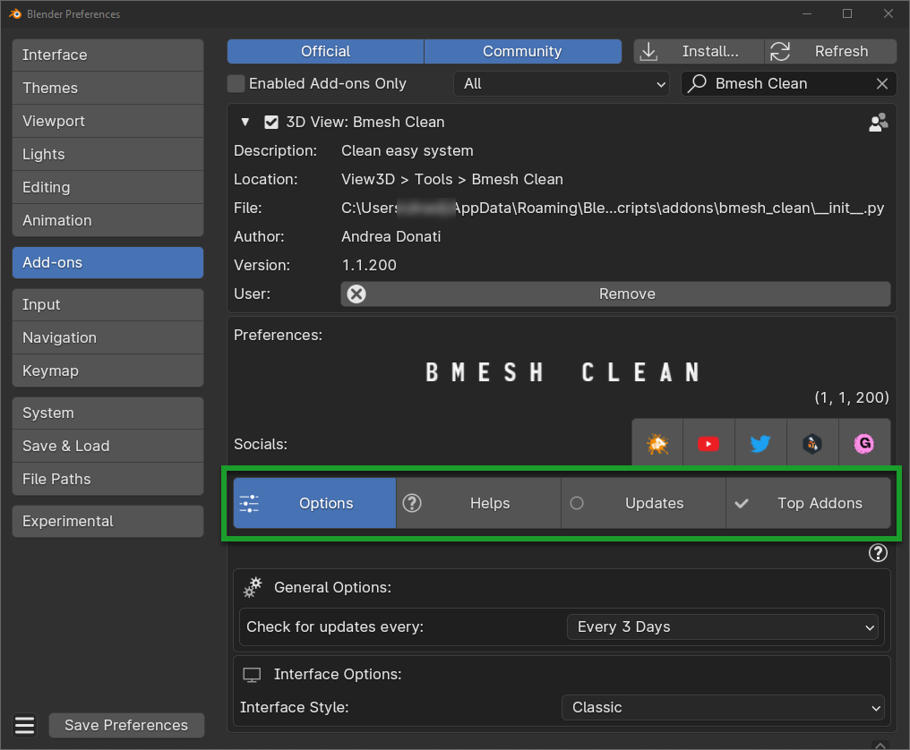
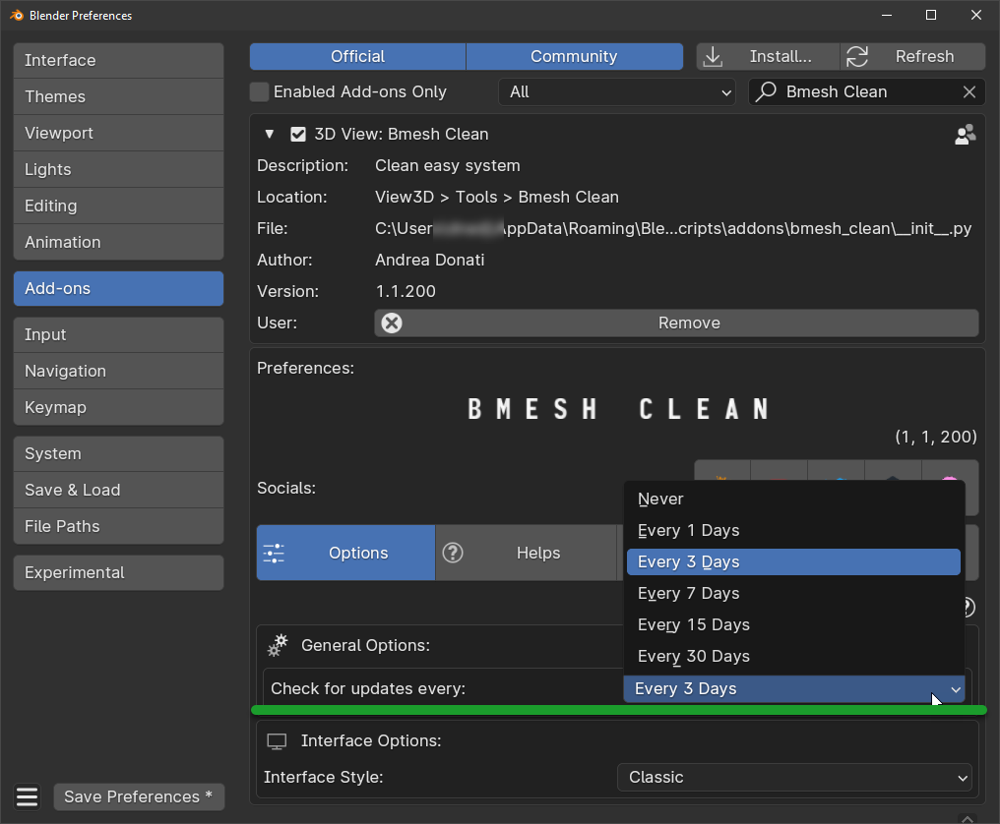
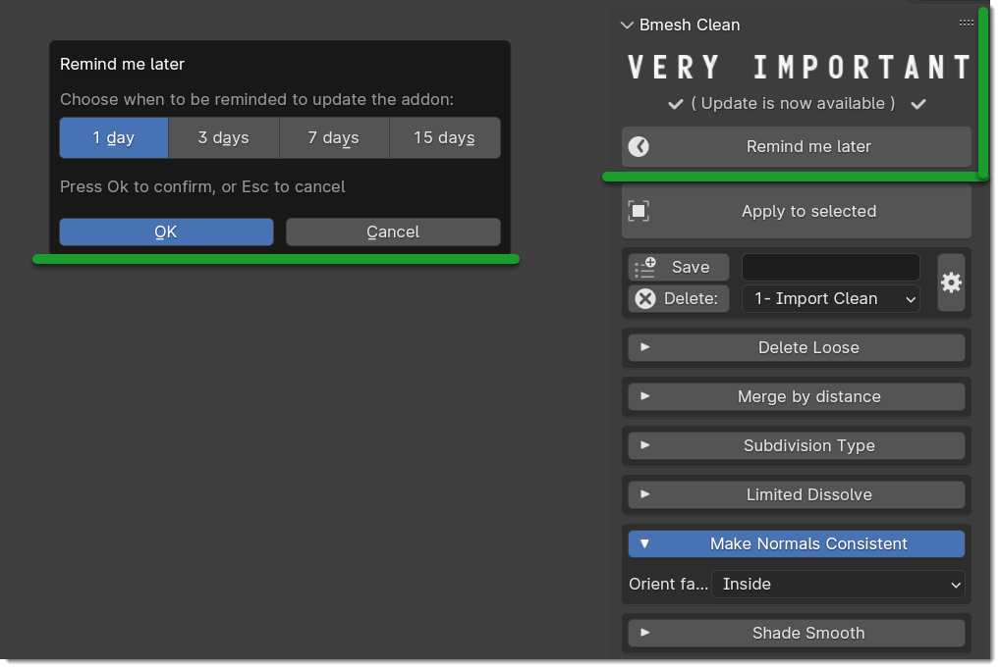
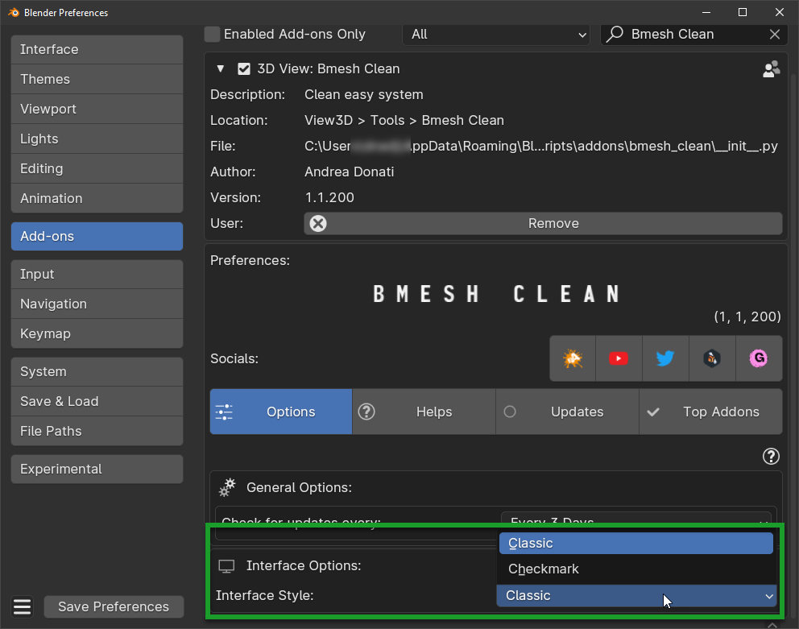
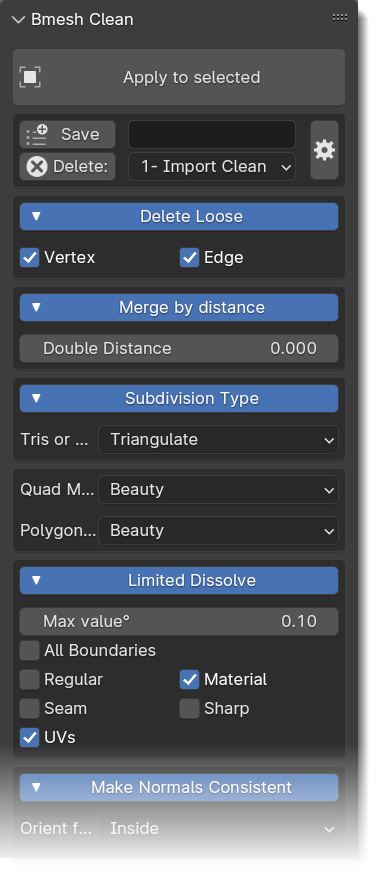
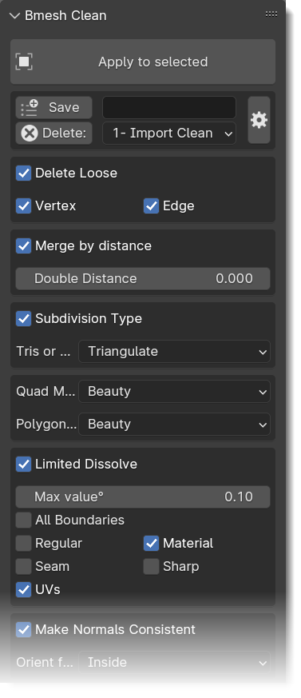
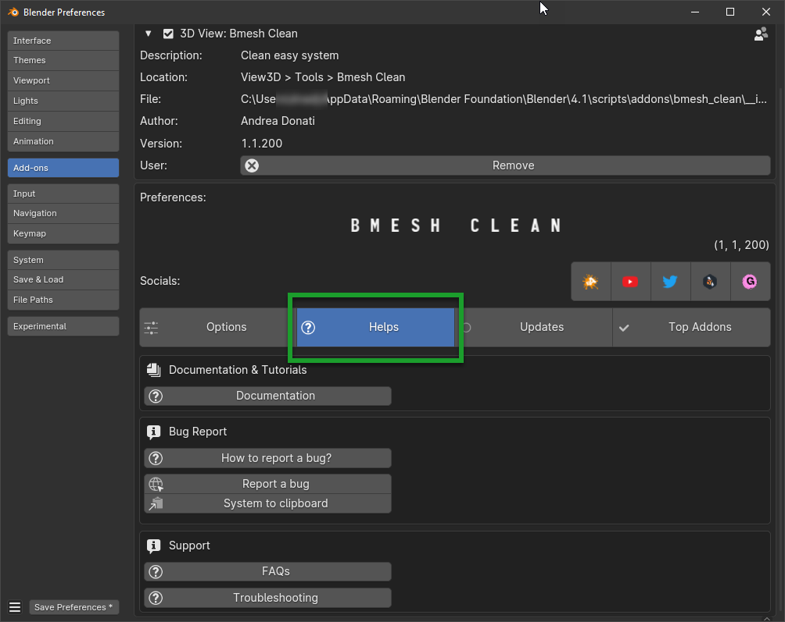
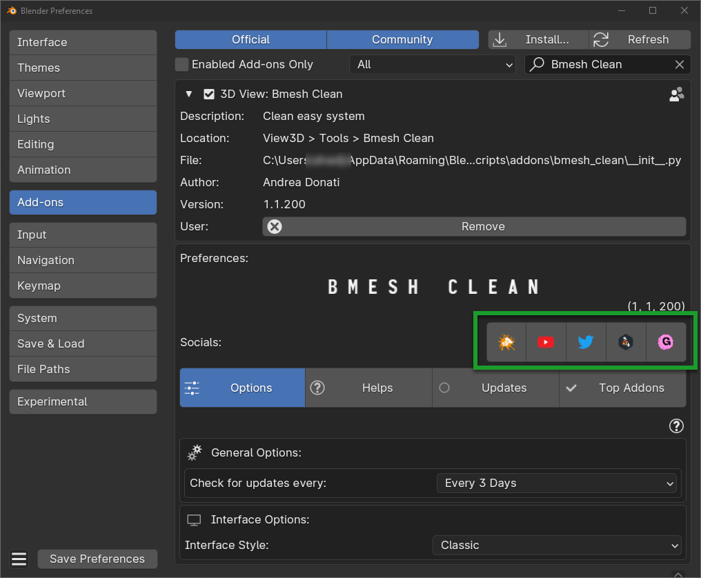

Preferences
There are two ways to access the preferences of Bmesh Clean
From the Blender menu
Edit > Preferences > Add-onssearch for Bmesh Clean in the search field.
{kind=link}
From the Bmesh Clean Options Button (This way need to be Bmesh Clean installed and enabled):

Preferences Tabs
Illustration of the preferences tabs, each tab has its own settings
{kind=link}
Options
Under the Options tab you can find the following settings:
Check for Updates
This selector allows you to decide the frequency with which Bmesh Clean checks for updates, you can also decide to set Never to disable automatic update checking.
{kind=link}
When a new update is available, within the selected time interval, Bmesh Clean will show you a message in the main panel to notify you, like this:
{kind=link}
By pressing Remind me later you can decide how long to postpone the appearance of the update message.
Interface Style
Tramite questo selettore, puoi decidere quale tipo di interfaccia usare.
{kind=link}
Interface Classic Style:
{kind=link}
Interface Checkmark Style:
{kind=link}
Helps
From this section you can access all the useful links to get help or information about Bmesh Clean.
{kind=link}
Updates
From this tab you can check the list of updates directly from Bmesh Clean, and see the entire list of updates in detail without accessing the Documentation page Updates Log
In addition, you will have 2 convenient buttons (BlenderMarker/Gumroad) that take you directly to the download pages of your purchased products.
Note
The buttons that lead to BlenderMarket and Gumroad, will open your purchase pages only if you have logged in with your account on these sites.
{kind=link}
Top Addons
This page shows some collaborations with artists who have developed high-level addons, so if you want to discover some quality addons, this is the right page.
If you are a developer, and you want to propose to be on this list, use the Contact Me button to send an email, the
email is pre-filled by itself, you will only have to write your message.
{kind=link}
Socials Buttons
This buttons allow you to access our web pages of interest
